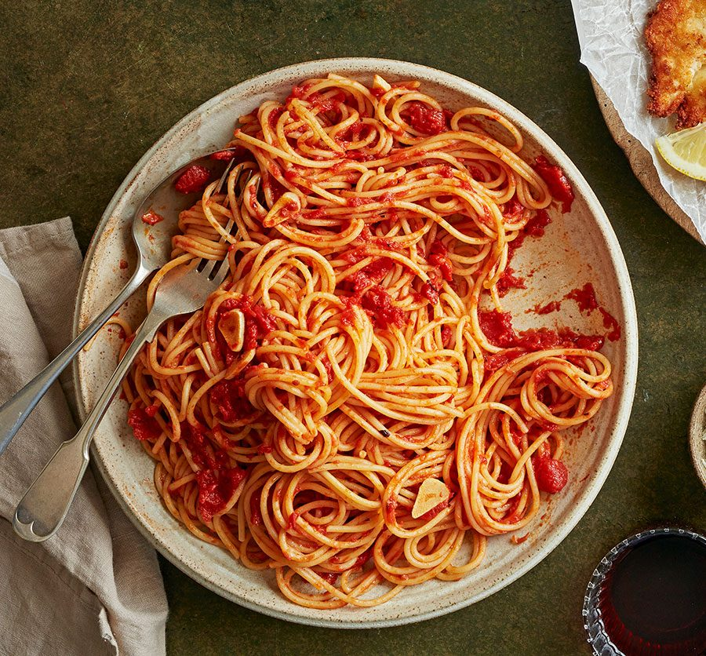

Spaghetti

Mamma mia
Box of spaghetti from the store
Maybe also a bottle of wine? idk
How to cook
- Put a large saucepan on a medium heat and add 1 tbsp olive oil
- Add 4 finely chopped bacon rashers and fry for 10 mins until golden and crisp.
- Reduce the heat and add the 2 onions, 2 carrots, 2 celery sticks, 2 garlic cloves and the leaves from 2-3 sprigs rosemary, all finely chopped, then fry for 10 mins. Stir the veg often until it softens.
- Increase the heat to medium-high, add 500g beef mince and cook stirring for 3-4 mins until the meat is browned all over.
- Fuck that and order DoorDash instead